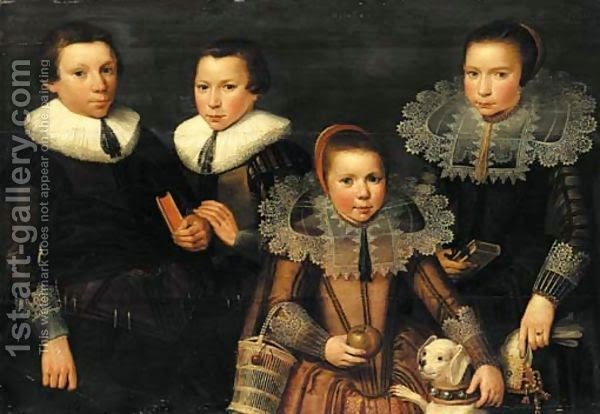

Yevamot 26 - Four brothers and two sisters
If there were four brothers, two of whom were married to two sisters, and the married brothers died, then how do the remaining brothers perform the mitzvah of yibum? The easiest solution seems to be that each brother marries (does yibum) with one of the sisters. However, as we discussed before, there is a concept of " bond ": each live brother is considered to be married in some degree to each of the two sisters, through the possibility of yibum with her. Thus, since he has this bond with one sister, he cannot marry the other one, because this other sister is as if his wife's sister. The same reasoning applies to both sisters: this bond precludes him from marrying the other. Therefore, they should give a chalitzah to each of the sisters.
We have explained this rule by the existence of the bond. However, not everybody accepts this idea. Some say that such bond does not exist. How then would they explain the rule that the brother in this situation can only do chalitzah but not yibum? - He will say: consider the possibility that one of the brothers does yibum, but then the other brother dies. The remaining sister now cannot marry the live brother, because he has already married her sister. Nor is there another brother to marry her. Thus, she needs no yibum or chalitzah, and the mitzvah of yibum is dissolved and lost. One should not loose a mitzvah, and this is why the yibum is forbidden by the Sages. Instead, the brothers should do a chalitzah, so that the mitzvah is performed at least in some way, rather than disappear altogether.
Art: A family portrait of two brothers and two sisters by Wybrand Simonsz. de Geest